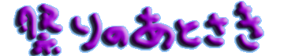

| 1993/10/16 | ||||
|---|---|---|---|---|
|
父から順に、母の枕元へ向かい、死に水を取る。二十代、三十代にしてみれば、初めての経験だ。もちろん私も妹も初めてだったが、死に水というのは、臨終の直前に行われるものではなかったか。亡くなったあと、誰もがその死に茫然としている最中に、まるでお焼香でもするみたいにして、順繰りに立ち位置から移動して、また元の位置に戻るなんてことを、しかも、あの、しぐさの荒い看護婦と年輩の小柄な看護婦の介添えで、こんな殺風景な場所で、エンゼル用のコップを使ってするようなものなのか。ただひたすら沈黙があたりを支配しているそのことだけが、厳粛な時だということを知らせた。急を聞いて、見舞いに駆けつけた母の友人が持ってきた、色彩豊かな花束が、隅のテーブルの上に、所在なげに置かれている。あとで調べてみると、死んでから行われる場合は、通常、病院から自宅に帰ったあとと書かれていた。あの時、あの儀式を必要としていたのは、誰だったのだろうか。経験のある人もない人も、何をしているか分からないような心持ちで、促されるままに、コップを手にしていたのではなかったか。 英昭オジの三番目の息子が枕元に立った。手を震わせながら、脱脂綿を巻きつけた割り箸を母の顔に近づけ、その額を湿らせた。へぇ、そんなやり方もあるのかぁ、話に聞くばかりで実際を知らないから、感心しそうになったその瞬間、年輩の看護婦が、そっと耳打ちして、彼の手を、唇のほうに誘導した。人々の緊張が一挙に解けた。前の人のを真似すればよかったのにと言ったら、他の人の陰になって、見えなかったと言う。そんなこともあるのかと、通夜の前には、ちゃんとお焼香の仕方を教えた。目の高さより上のあたりから、料理で塩を振るみたいに、パラパラと撒くんだよ。ウソ教えるな、と誰かにたしなめられたが。 医者に呼ばれた。会議室のようなところに入っていくと、何人かの医者が神妙な顔をして座っていた。こんなふうにして病状経過を聞くものなのかと思っていると、血中の何かの値が一万を越えていて、手の施しようがなく、先に説明したように、いつ若い頃に患った肺浸潤の結核菌が湧き上がってくるか分からないような状態でもあり、劇症肝炎の中でも今までに例がないほど非常に急激に症状が悪化して、たいへん貴重な症例ですと一気にしゃべって、言葉を切った。貴重な症例、だと？誰について誰に向かって何を言おうとしているんだ。是非、解剖をさせていただきたい。物物しい雰囲気で始まったこの儀式は、「解剖の同意」がテーマだった。そんなこと、今の今まで想像だにしなかった父が、悲鳴を上げた。なぜこんなことになったのか、それを聞きたかっただけだ。それなのに、切り刻むなんて、そんな話だとは、そんなことできない。今すぐ連れて帰りたい。しばらく医者に席を外してもらい、英昭オジ、両親の若い頃からの友人で、医者でもあるハジメおじちゃんを交えて、話し合った。世話好きの母がもしここにいたら、献体を望むだろう。人の役に立ちたいというのが、行動の根っこにあった人だから。 一人反対し続ける父を皆で説得して、解剖に同意した。この病院に来て以来、医者や看護婦への不信ばかり募っていたので、病室で耳にした「献体登録」のことを口にした。そんな話をするはずがないと医者たちは否定した。母のことではなかったとしたら、ああいう状況下で、私語をしていた神経がますます信じられない、解剖が有意義なものになると信じていいんですね、と念を押すと、ハジメおじちゃんが、その結果を、我々に知らせてください、論文とは言わないまでも、貴重な症例と言われるからには、研究成果をいずれ研究誌にでも発表されるのだろうから、その冊子を、届けてください、と後押ししてくれた。医者が、それらを受け入れた、フリをしただけだったらしい、のは、あとになって分かること。 母は既に霊安室に移されていた。ここに一晩母を置いていくなら、自分も残ると父が言い張った。かなり低めの冷房が効いていて、長く生者が留まることはできない。そこに、母は一人留まるしかない。ひたすら困惑と悲嘆に暮れる父をなだめすかして、解剖に同意させ、家に帰ることも渋々承知させた。七時過ぎに臨終を告げられたはずが、帰るときは十二時を過ぎていた。何台かの車に分乗して、深夜の無言の帰宅。 | ||||
| 2001/10/2 | ||||
|
話は前後するが、通夜が始まる前、トミエおばとその長男トモアキが、受付に立ってくれていたときのこと。この長男は、死に水を取るとき、母の額を湿らせた三男ユウスケのお兄ちゃんだ。ばあちゃんの通夜に三男は来なかったが、次男のカツヤが来ることになっていた。 あたりは暗くなり、斎場の入り口に一台のタクシーが止まった。明るい色のダブルのスーツを着た恰幅のいい男性が、ドアを開けて入ってきた。その威勢のよさに圧倒された長男が思わず深々とお辞儀をしたが、隣にいた母親が、そんな長男を小突いた。「カツヤったぁい。」長男がまじまじと客の顔を見た。弟が笑っていた。勝った！と次男。負けた、と長男。 まきば園のスタッフが引き上げたあと、ひとしきり長男と次男の対決が酒の肴になった。長男のほうが背は高いが、幅は次男が上回っている。翌日の仕事にそなえて、電車のあるうちに二人揃って帰ることになった。普段ほとんど口を利かないという年子の兄弟が、長い道中何を話すのだろうかと、みな興味津々だったが、こちらからそれぞれの携帯にメールをしても、それぞれがそれぞれの携帯に向き合うばかりで、ほとんど会話のないまま別れたらしい。 | ||||
| 2001/10/3 | ||||
|
近くのファミレスに朝食を取りに行った。斎場に戻ると、間もなく、ばあちゃんの弟夫婦、アラタおじとミチコおばが到着。まったく思いがけず、不知火に住んでいるばあちゃんの従妹の息子で、わたしたち姉妹とあまり年の変わらない、ヤスヒロちゃんが来てくれた。彼は、八王子に住んでいる。葬儀が始まる十二時をわずかに過ぎたころ、父の弟でちーちゃんのお父さんである圭一オジ、父の一番下の弟夫婦である、隆彦オジと郁子オバが到着。早朝神戸を発っての強行軍。そんな無茶が通用するほど、もう若くはないのだが。亡くなった日の翌朝、まきば園に電話をくれた、英昭オジの弟夫婦宏昭オジと五子オバと、ばあちゃんが孫のように思っていたその娘サトミちゃんと息子ノブアキ君から、弔電が届いた。妹の勤務先からは、弔電の山が届き、複雑な組織らしく、それぞれの部署のトップの名前で弔電が打たれていたが、ばあちゃんをよく知っている同僚たちからの花籠を妹は一番喜んでいた。わたしの勤務先からもスタンド花。参列者が少ないであろう葬儀を、父の兄弟をはじめ、多くの人が気遣ってくれた。 | ||||
| 祭りのあとさき その一 | ||||
| 祭りのあとさき その二 | ||||
| 祭りのあとさき その三 | ||||
| 祭りのあとさき その四 | ||||
| 祭りのあとさき その五 | ||||
| 祭りのあとさき その七 | ||||
| がまだすじいさん | ||||
| なんでんよか | ||||
| ばあちゃんも生きとるよ |